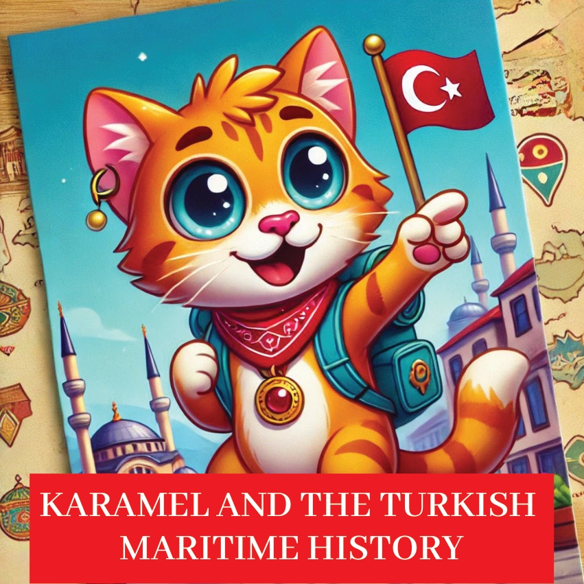
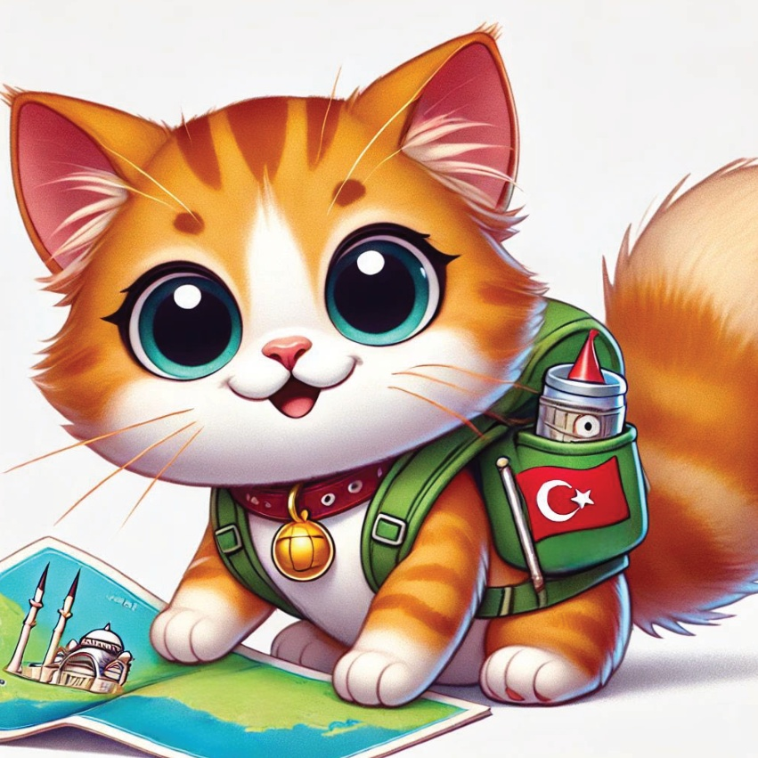
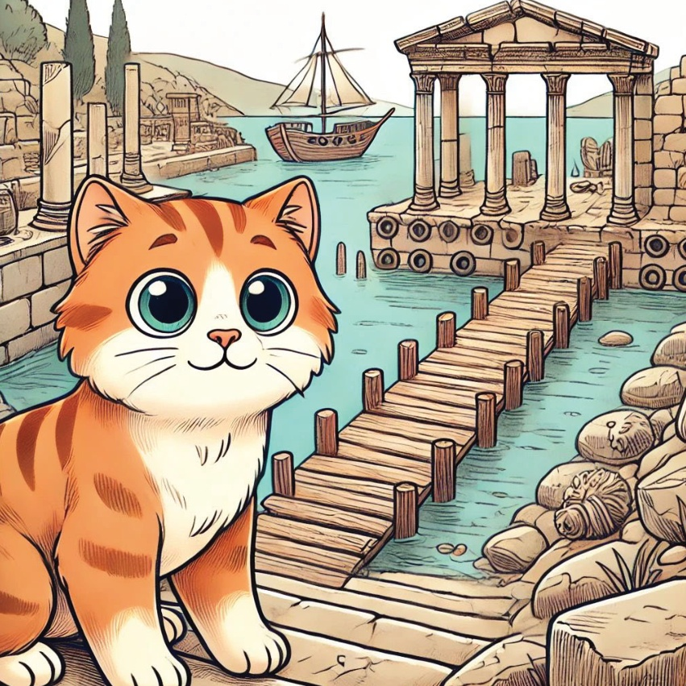
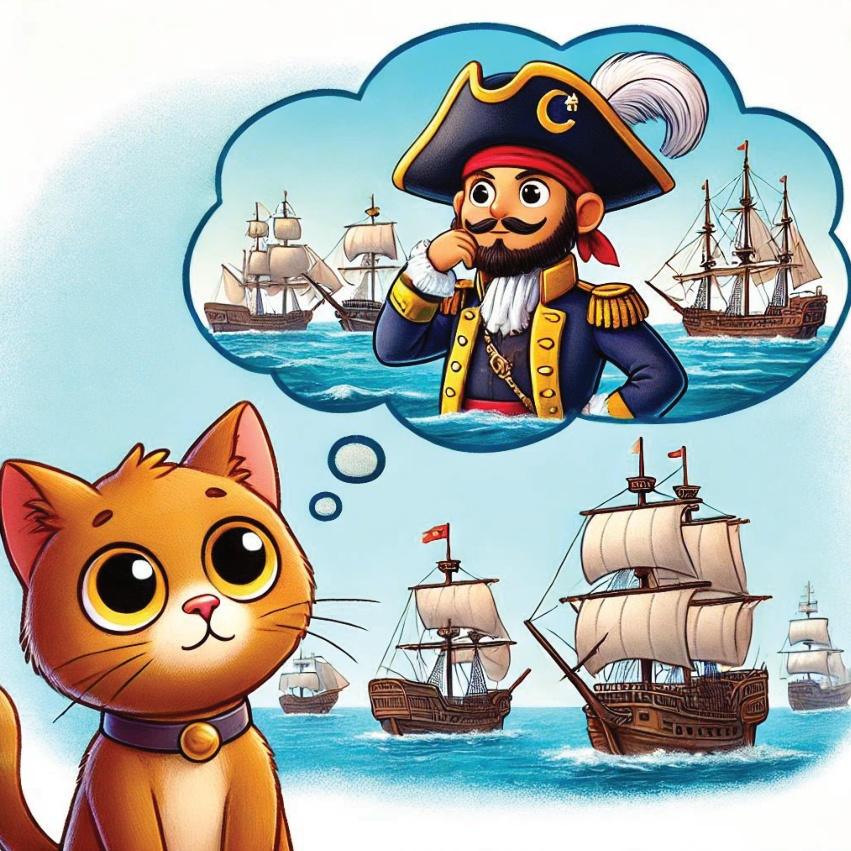
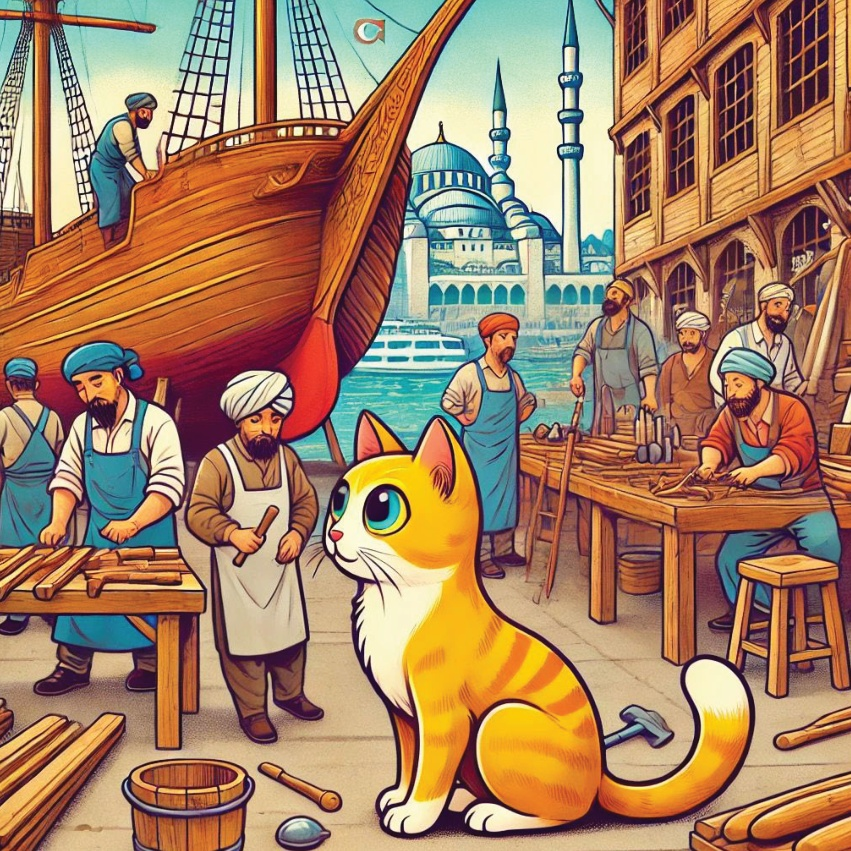
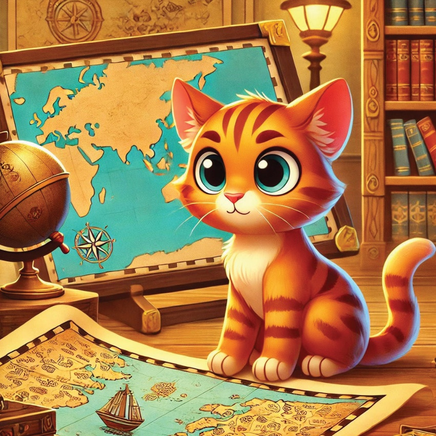
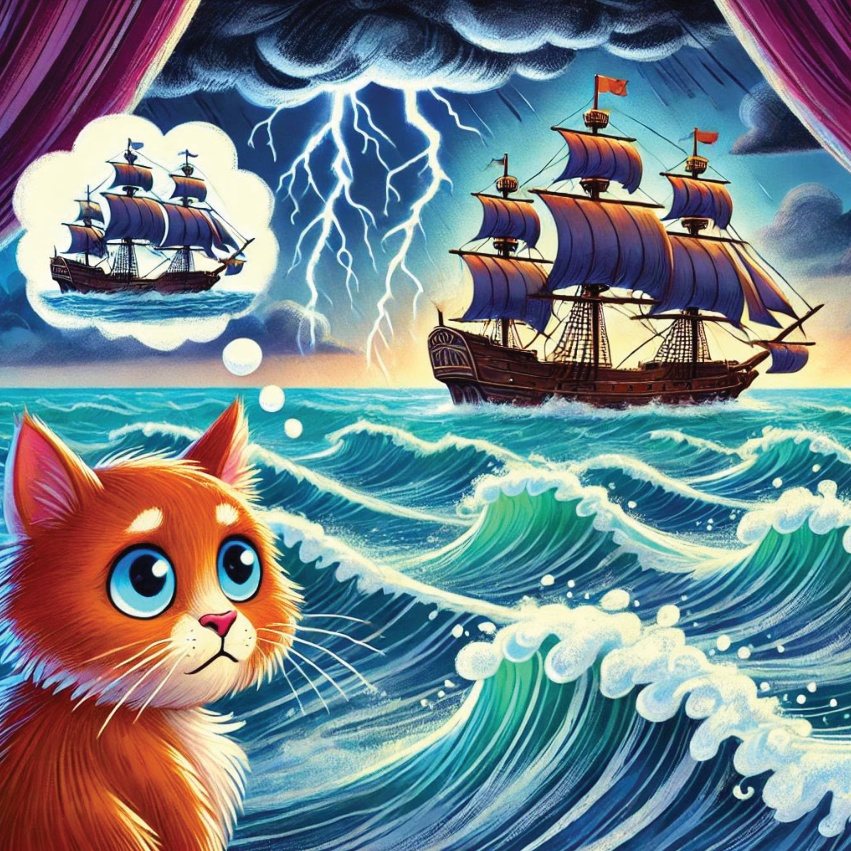
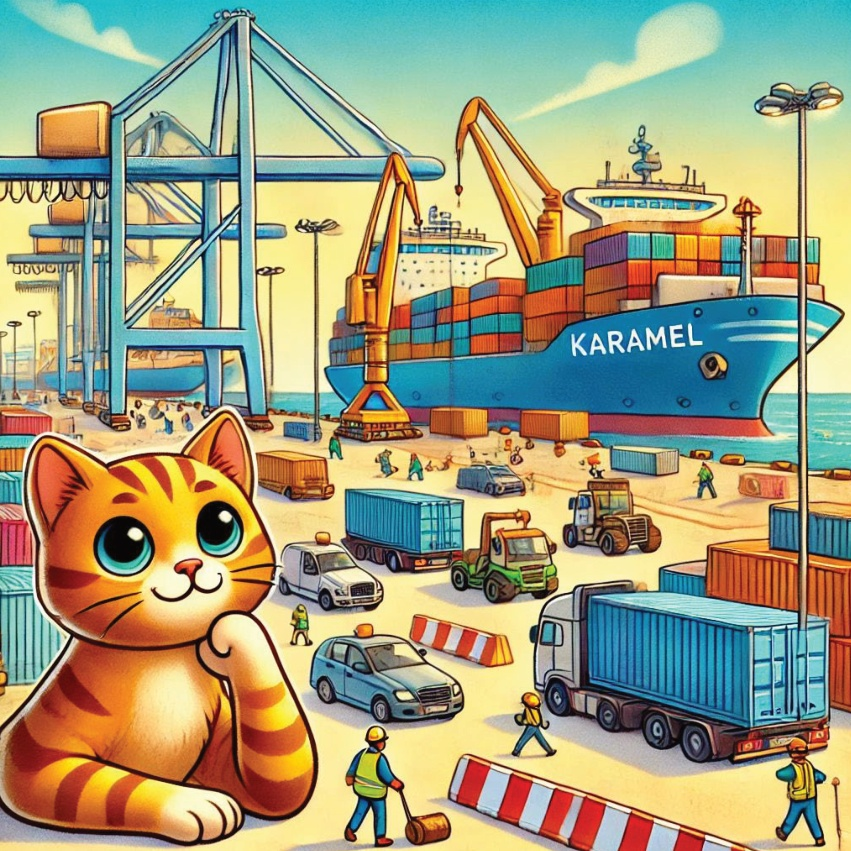
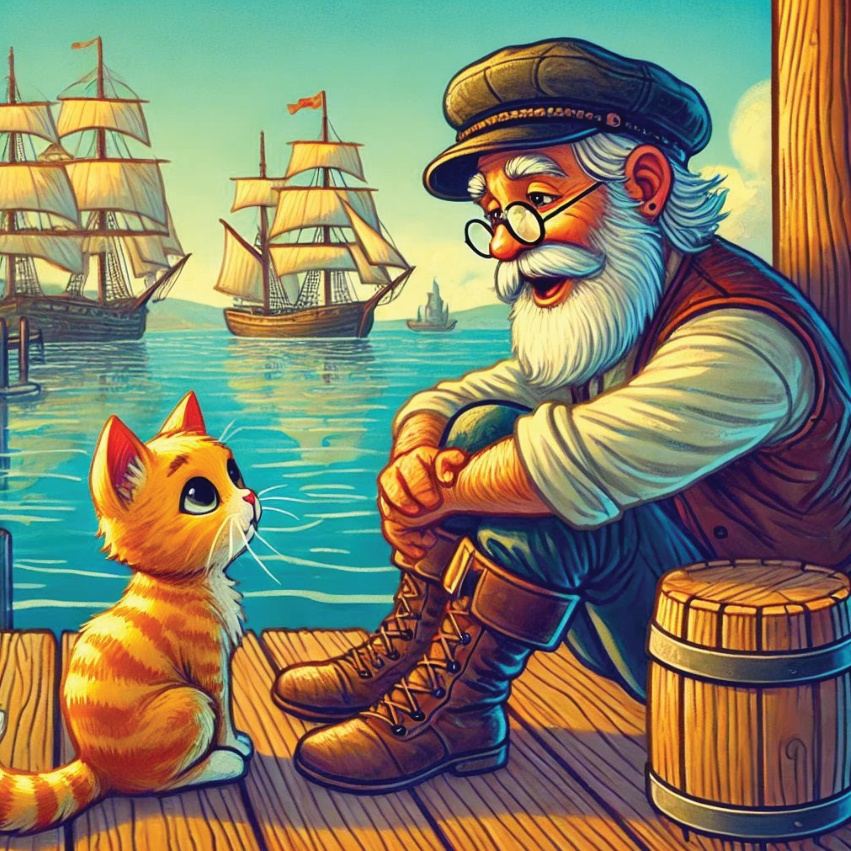
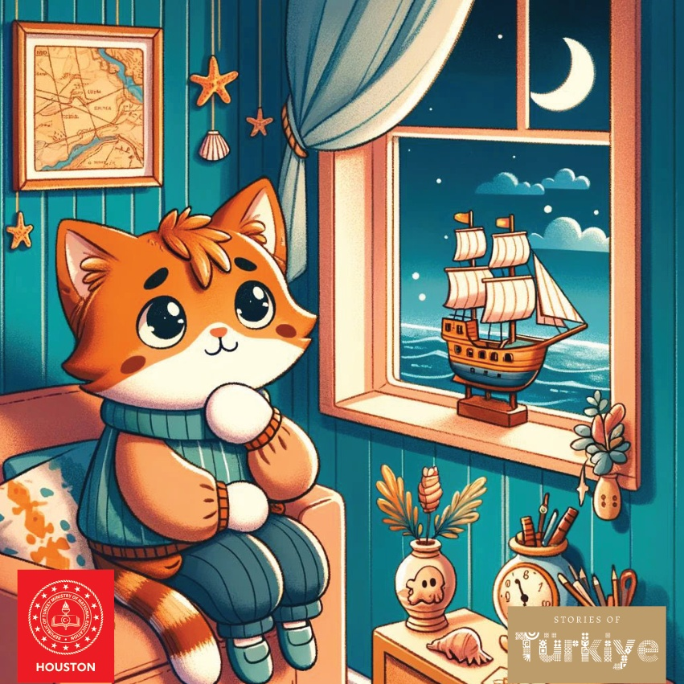

1

2

3
从前，有一只名叫卡拉梅尔的小猫，她非常喜欢探索和发现新事物。有一天，她决定深入地了解土耳其的悠久海事历史，她渴望学习关于古代港口、著名船只以及水手们的的故事。
4

5
古老的以弗所港口.
Karamel的第一次旅行是来到古老的以弗所港口。她惊讶地看着这里曾经非常热闹的港口遗址。她想象着从远方带来货物进进出出的船只。
6

7
强大的巴尔巴罗萨.
接下来，卡拉梅尔学习了著名的奥斯曼海军上将巴尔巴罗萨的故事。她听着关于他航海战役和胜利的传说，这些胜利使他在海上历史中成为一个传奇人物。
8

9
伊斯坦بول Karamel tersaneleri, büyüleyici gemilerin yapıldığı İstanbullu tersanelere gitti. O, ustaların ahşap gövdeleri ve yelkenleri nasıl hazırladıklarını izledi. Gemileri yolculuklarına hazır hale getiriyorlardı.
10

11
皮里·雷斯地图卡拉梅尔对皮里·雷斯地图非常着迷。这是一张古老的地图，它描绘了16世纪人们所知的世界。她喜欢地图上精细的画作，也钦佩它的制作者的冒险精神。
12

13
艾尔图鲁·卡拉梅尔听到了关于埃尔图鲁军舰的故事。这艘军舰去日本旅行，是为了表示友谊，但是回程的时候非常不幸地沉没了。她感受到了那些水手们旅行时的勇敢和悲伤。
14

15
现代航海探险 - Karamel.
Karamel 参观了一个现代的土耳其港口。在那里，她看到了巨大的货船，还有非常忙碌的活动。她明白了航海的历史是如何变化的，并且对土耳其来说仍然非常重要。
16

17
卡拉梅尔遇到了一位老水手，老水手和卡拉梅尔分享了他航海生涯的故事。他讲了关于冒险、风暴和水手们互相帮助的经历。卡拉梅尔认真地听着，吸收着每一个细节。
18

19
Karamel的心里充满了新的经历和回忆，她意识到土耳其的海上历史真是丰富又有趣。她回到了家，梦想着下一次冒险。
20
21

22